Installation and User Guide for zimu.ai
Introduction
zimu.ai provides a browser extension for Chrome that provides interactive and adapative subtitles for select Chinese TV-shows and movies on Youtube. It is currently only available for the Chrome browser.
The philosphy behind this tool is that subtitles are there to help you understand the content. But as we're trying to learn and not only understand, we want to be challanged to just the right degree, making it not too easy, not to hard to understand. zimu.ai does that by allowing you to gradually hide information until one day all the subtitles empty and you're fluent, viola!
Download and Install in Chrome
For the time being the extension has to be installed manually and not through the Chrome store, this is due to updates sometimes take weeks to be approved, greatly slowing down the speed of iteration and improvement.
To manually install the extension, first download the latest version here. Extract the files into its own folder, for example "browser_extension".
Open Chrome, click the small puzzle icon to the right of the address bar, then "Manage extensions".
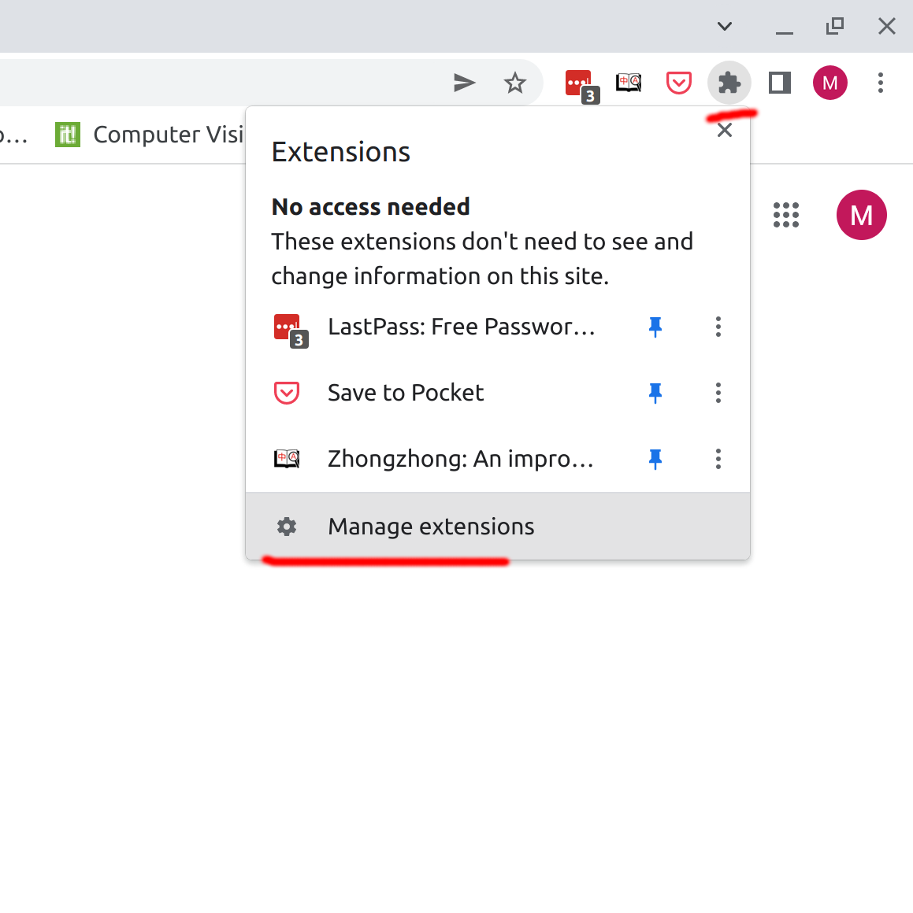
Switch on Developer mode.
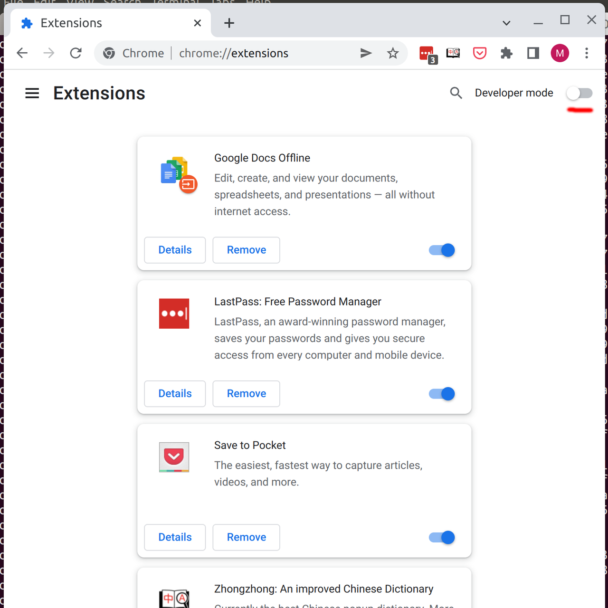
Click "Load unpacked", navigate to the extracted folder and confirm.
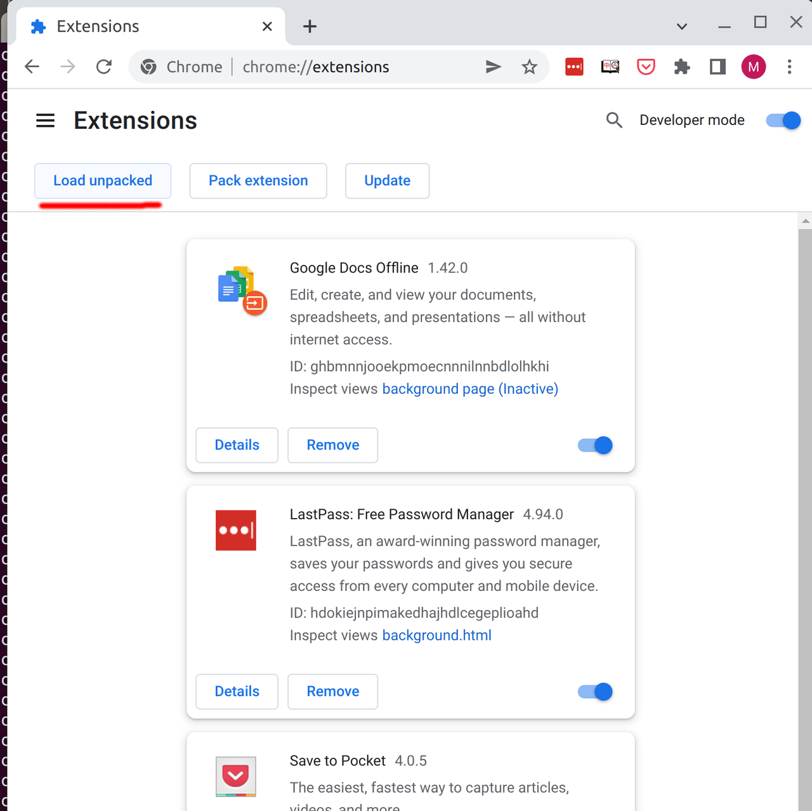
To make the extension more accessible, click the puzzle icon again and pin the extension.
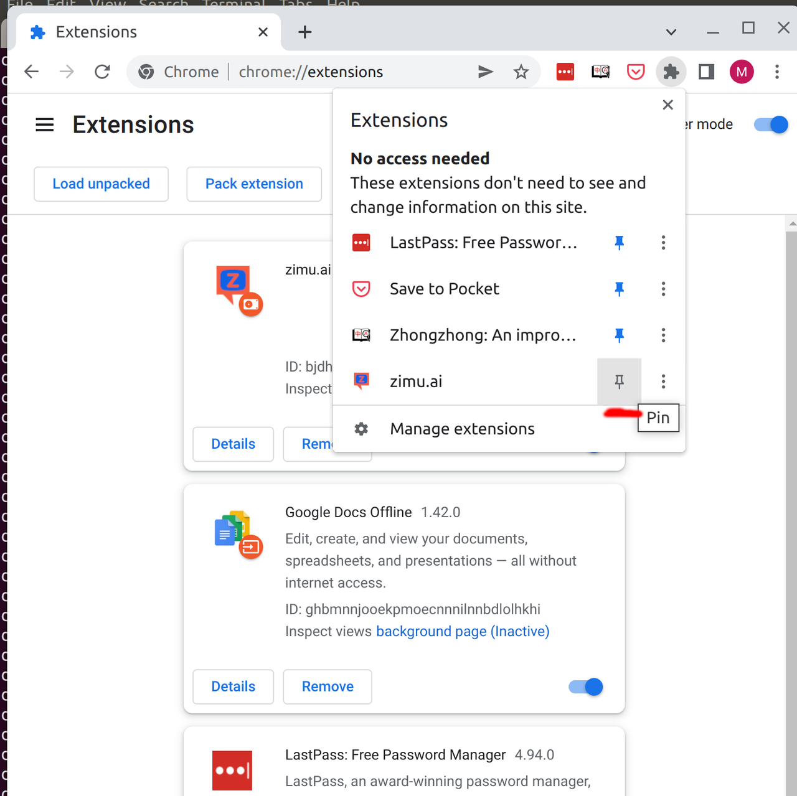
How to start
After having installed the extension, navigate to browse.zimu.ai and pick a show or movie to watch. After loading the video page, you should see the zimu.ai subtitle window on top of the Youtube page.
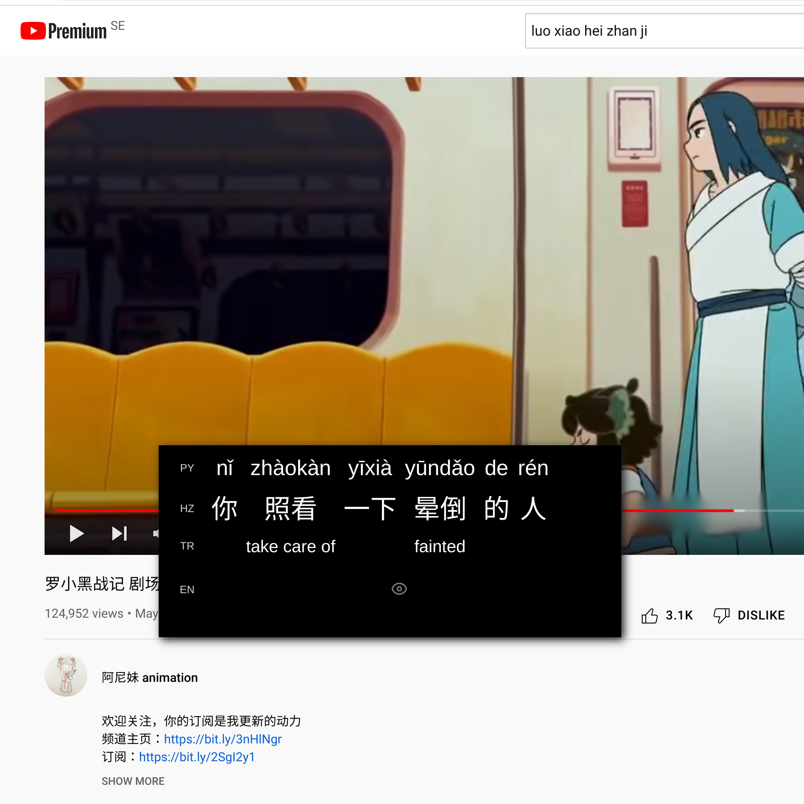
Hiding information
When you first use the extension, you'll see that there are three rows, pinyin, hanzi and word translations, and under those is the full sentence translation. At first, all the information is available, except the full sentence translation. To hide a piece of information you can click on it to open the context menu and select the "hide" action. It will then be hidden the next time you encounter it, sort of like a natural flashcard. If when you encounter it again you forgot the meaning, you can click it to peek. After peeking it will still remain hidden the next time you see it, unless you click the "pin" icon in the context menu, which will reset its state to non-hidden.
Knowledge levels
If you're not a complete beginner, it might get tedious to hide all the stuff you already know. In that case you can go to the options, then the "Knowledge" tab and select which HSK levels to automatically hide for each information type.
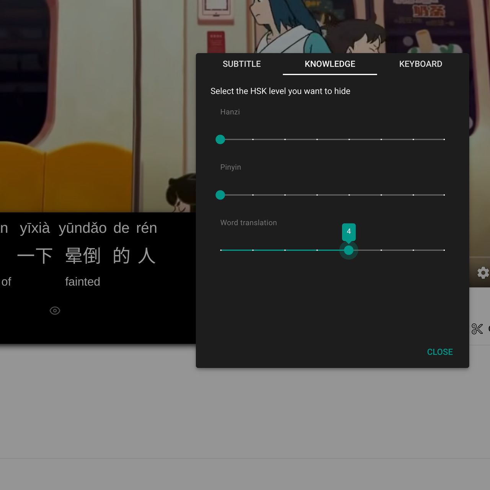
Peeking and pinning rows
Sometimes we want to override our hidden information and display it anyway, for example if it's too difficult to make out what people are saying we might want to show all the pinyin, even if we know it very well. For this you can use the peek/pin button to the left of each row. Click once to peek all the information on that row. Click again to "pin" it so that it remains visible for all new subtitles.
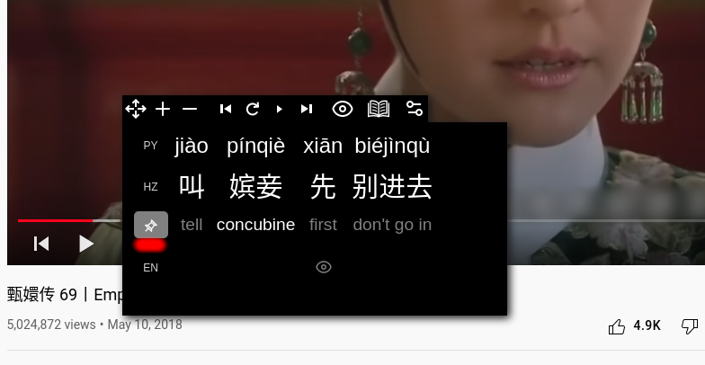
Dictionary
If the word translation is wrong or you need more context, you can reach the dictionary entry for the word from the context menu, and then clicking the dictionary button.
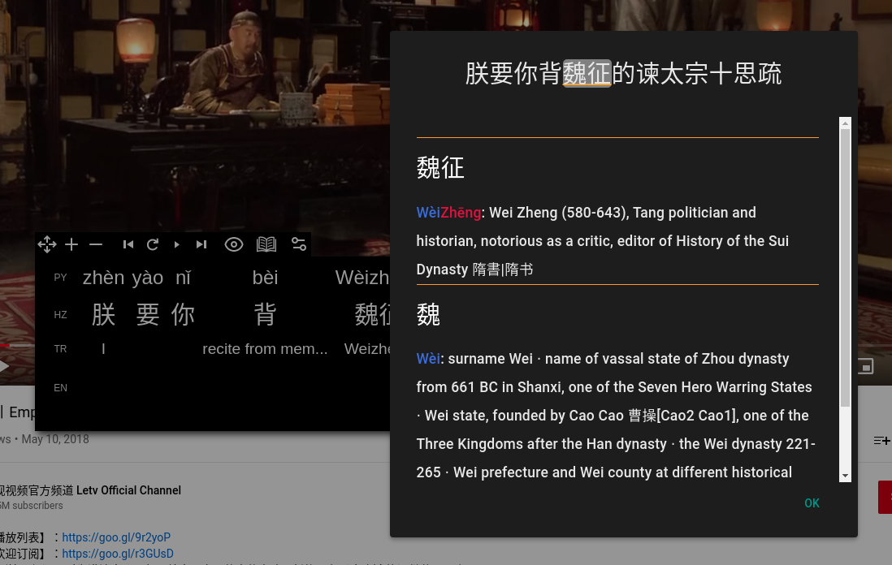
Keyboard shortcuts
By default, these keyboard shortcuts are available:
Left arrow - go back one subtitle Right arrow - go forward one subtitle R - replay the current subtitle from the start D - open the dictionary P - peek all information T - peek sentence [t]ranslation Y - peek [p]inyin row H - peek [h]anzi row N - peek tra[n]slation row
These bindings can be changed in the options.
Blur hard-coded captions
By default, hard-coded captions in the video are blurred. This is to reduce distractions and "leaks" of information that the learner doesn't wish to see.
To unblur a caption, you can either click it in the video, or go to the options under the Subtitle tab.
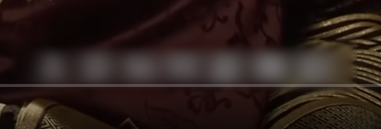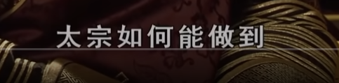
Font size
Adjusting font size can be done with the plus and minus buttons on the top subtitle menu.
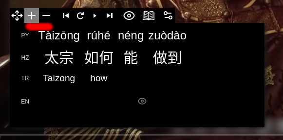
Word frequency
When deciding which new words to focus on it can come in handy to see how often they occur in the video. If you hover over a word, the number of occurrences are shown in a small badge.
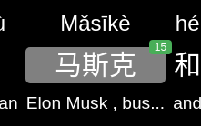
Auto pause
Depending on your level and the speed/difficulty of the content, you can set the "auto pause" option in the "Subtitle" option tab. This will pause at the completion of each subtitle. You then press play (space) to resume after each subtitle.
Starring content + exporting to Anki
While there are plans to integrate flashcards and SRS (Spaced Repetition System), for now there is the ability to export starred content to Anki, which is a free and open-source flashcards app.
In order to export, you first "star" a word or a full sentence translation by opening the context menu and clicking the star icon. Starred content can be seen in the Dashboard, which can be reached from the popup menu when you click the extension's button to the right of the address bar.
In the Dashboard, select the words in the table you'd like to export and click the "Export to Anki" button.
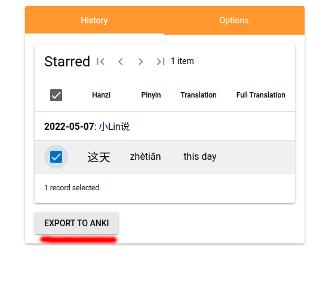
When clicking export, there are three tabs for different kinds of Anki exports. The first tab is for "Basic", then "Cloze" notes and lastly in the "Advanced" tab. All three uses fields separated by semi-colon rather than comma, make sure to change this when importing.
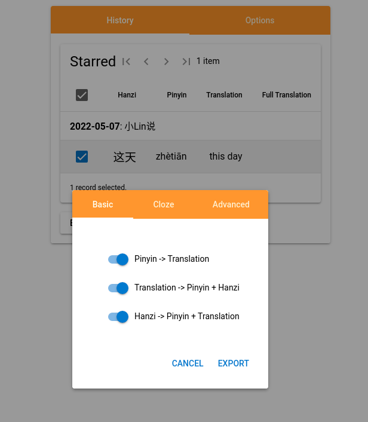
For the advanced export, the complete data of the interaction can be exported in JSON format, including all the separate pinyin, hanzi, word translations and more. With this you can build more advanced cards. The fields on these notes includes:
- search: the combination of hanzi, pinyin and word translation, for easier searching of notes (since the rest of the data is in the JSON field)
- data: the JSON containing all the relevant data
Fields 3-9: "boolean" fields (1 or empty) indicating whether a specific card should be generated. The names of these fields must correspond with the conditional rendering tags at the top and bottom of the card templates.
Here are the cards with front and back templates that can be used as examples
- Cloze word hanzi + pinyin (front, back)
- Cloze word translation (front, back)
- Cloze whole word (front, back)
- Basic produce Chinese (front, back)
- Basic produce translation (front, back)
- Basic produce Hanzi (front, back)
To create a note with the right cards in Anki, first click "Manage Note Types" in the drop down menu
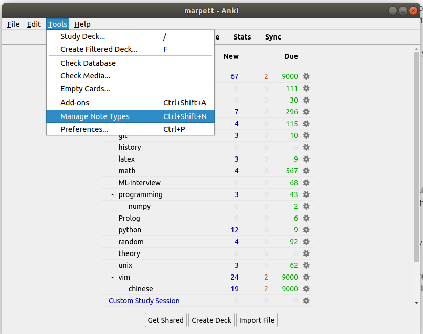
Then click "Add", and use the "Basic" note type as the base. Then click "fields" to edit the field so that it looks like this
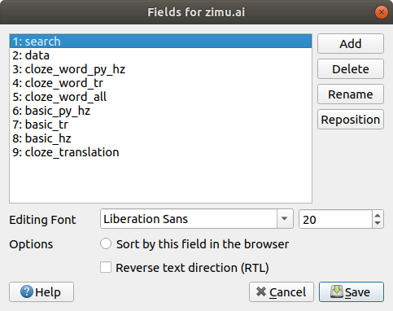
You are now ready to import the exported advanced file to Anki, just remember to choose the semicolon (;) as the separator, and the correct note type.
If you wish to add or remove cards to be generated, you can first edit them in the browser extension and then update the cards in the Anki note type. The last field in the export is always "1" if the starred content was the full sentence translation rather than a word.
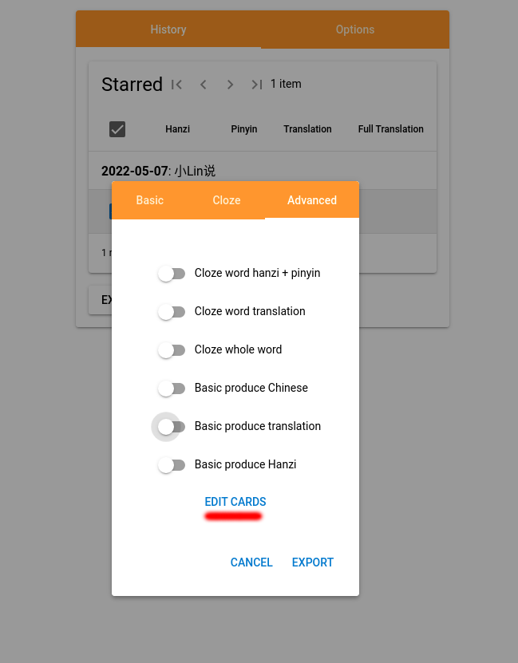